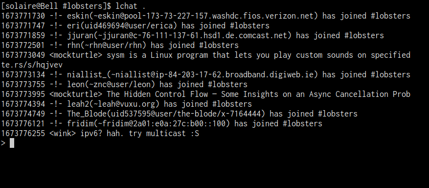

Introduction
lchat is a small program that is designed to interface with other programs such as ii that present FIFO interfaces. This blog post will briefly show what that means and how lchat works in practice.

ii
A typical irc client works by negotiating a connection with an IRC server before presenting the user with some kind of interface to interact with the server.
For example, the popular client weechat draws a TUI interface that shows the server you’re connected to, what channels you’ve joined, and so on.
Similar to many other interactive programs, it continually listens for the user’s keyboard input. When the user enters messages or commands, weechat marshals information back and forth between the IRC server, updates its internal state, and redraws its interface.
ii (short for “irc it”) is an IRC client which works at a much lower level. It doesn’t draw anything or listen for keyboard or mouse input at all.
Instead, represents your connection to an IRC server as a hierarchy of files.
Each entity that you interact with in IRC, be it the server (to issue commands), or a channel, or a user, gets its own directory and its own pair of files.
One file is named in, and anything written to that file is sent to the process. Another file is named out, and anything received from the process is written to it.
Reading and writing to these files is not done by ii itself, but by some other existing part of the system, such as echo for writing and cat for reading.
Representing processes by files in this manner is known as using a “Named Pipe” or a “FIFO” in Unix systems.
using ii
If you run ii on its own, you’ll see a concise summary of its usage:
usage: ii -s host [-p port | -u sockname] [-i ircdir]
[-n nickname] [-f fullname] [-k env_pass]When I run ii -s irc.libera.chat -n eskin, ii connects me to libera.chat. By default this creates a few folders in “~/irc”:
The tty that I ran ii from is now taken over by a process that maintains a connection to the server and displays all messages from the server. To interact with ii, I switch to another terminal and interact with the in and out files created for the server I joined.
Here’s me failing to login:
And here’s me joining a room:
Writing to in files and reading from out files with echo and cat are a little unwieldly, which is where lchat comes in.
lchat
lchat expects a command line argument containing the location of a directory containing in and out files.
The command starts a process that continually reads from the out file and displaying its content in the terminal. At the same time, it continually provides a message area for you to type messages and submit them by pressing ‘Enter’. When you do, the contents of the message area are sent to the in file.
In the image below, I navigate to the #linux subdirectory which is where the in and out files for the linux channel exist on my filesystem and the enter lchat . to start lchat in that location.
lchat will work with any program that uses FIFO this way, including a few programs listed on the lchat homepage.
Installation
If you’d like to try out lchat, you’ll first need to grab ii:
git clone https://git.suckless.org/ii
cd iiIf you want to use SSL, you’ll want to apply a patch to the repository:
wget https://tools.suckless.org/ii/patches/ssl/ii-2.0-ssl.diff
git apply ii-2.0-ssl.diffThen build and install ii:
make
sudo make installFinally, you’ll want to clone, build, make, and install lchat:
git clone https://git.suckless.org/lchat
cd lchat
make
sudo make installI’m a fan of the filebased approach to irc, so that I can keep it passively running without keeping track of an active window.
ii and lchat are fun, hackable projects that are fun to play around with. lchat was the first use I saw of libgrapheme in the wild, so that was cool to see. Check it out if you’re in to that sort of stuff!